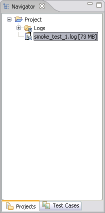

A project is a directory with a given name that contains a collection of files and folders. To be able to examine the log files, they must be associated with a project.
The following actions is possible for a project:
Create Project,
Import Project,
Open Project,
Close Project,
Delete Project
